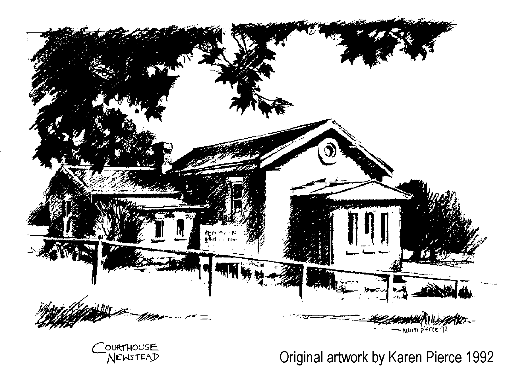

|
|
|
Welcome to the home page of the Newstead & District Historical Society.
 Former Courthouse Canrobert Street Newstead Victoria
In 1863 the Newstead Court of Petty Sessions was built to the design of colonial architect John James Clark. In February 1986 a group of interested people met and formed the Newstead & District Historical Society Inc. In 1987 the Society applied through the then Shire of Newstead to the Department formerly named Conservation, Forests & Lands for the use of the old courthouse as a venue. The application was successful and since then members have carried out a great deal of work both in restoring and maintaining the building as well as collecting and conserving the history of the area. Our building is unique in that no alterations or additions have been done to it. |
|
©2004-2025 Newstead & District Historical Society Web Design: Brian Dieckmann Page last updated: 13 Mar 2026 |